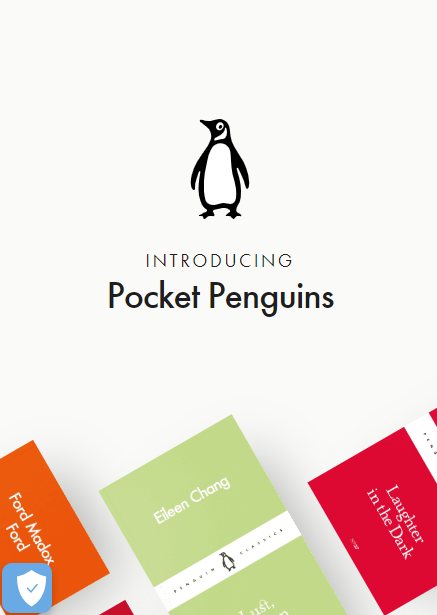

Hick’s Law

Google's homepage typically features a clean and minimalistic design with a focus on the search bar. This simplicity reduces cognitive load and helps users make quick decisions without being overwhelmed by unnecessary options.
Visual Hierarchy
2etlab Project
2etlab.webflow.io2ET Labs by Carter Ogunsola uses negative space to highlight its mission statement in the center of the homepage. The minimalist white text subtly contrasts the blue-gray background, standing out without taking too much of the user’s attention away from other elements. This website also uses a Z pattern, placing information at different corners of the page. The logo and contact form CTA appear in the top two corners where visitors will find them first. Secondary information — scrolling instructions and a copyright icon – appear at the bottom corners of the page, guiding users to prioritize interaction with the elements that matter most.
White Space and Clean Design
Pocket Penguins
pocketpenguins.com The colors stand out strongly against the background to show-off Pocket Penguin’s vibrant and charming brand personality. They use the white space to make the audience focus in the Brand, and don't ocupade the page with things that are desnecessary